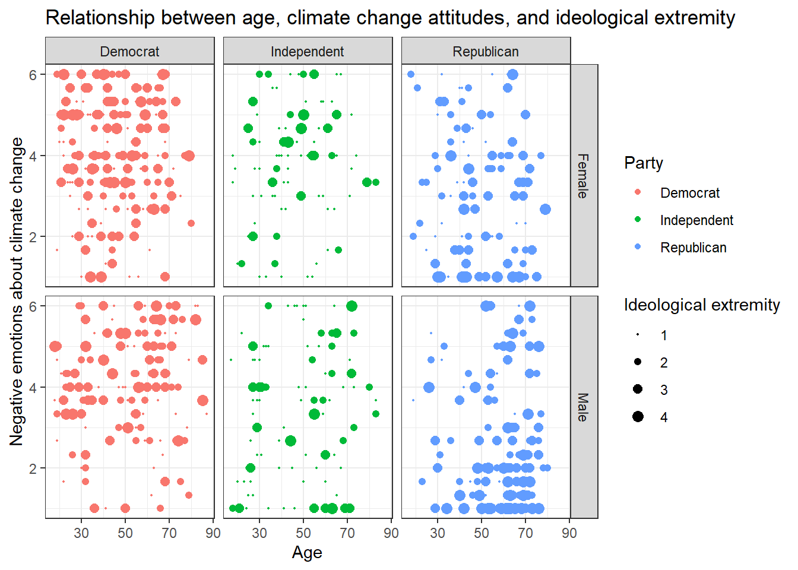

Solutions
This is where you’ll find solutions for all of the tutorials.
Solutions for Exercise 1
Task 1
Below you will see multiple choice questions. Please try to identify the correct answers. 1, 2, 3 and 4 correct answers are possible for each question.
1. What panels are part of RStudio?
Solution:
- source (x)
- console (x)
- packages, files & plots (x)
2. How do you activate R packages after you have installed them?
Solution:
- library() (x)
3. How do you create a vector in R with elements 1, 2, 3?
Solution:
- c(1,2,3) (x)
4. Imagine you have a vector called ‘vector’ with 10 numeric elements. How do you retrieve the 8th element?
Solution:
- vector[8] (x)
5. Imagine you have a vector called ‘hair’ with 5 elements: brown, black, red, blond, other. How do you retrieve the color ‘blond’?
Solution:
- hair[4] (x)
Task 2
Create a numeric vector with 8 values and assign the name age to the vector. First, display all elements of the vector. Then print only the 5th element. After that, display all elements except the 5th. Finally, display the elements at the positions 6 to 8.
Solution:
age <- c(65,52,73,71,80,62,68,87)
age## [1] 65 52 73 71 80 62 68 87age[5]## [1] 80age[-5]## [1] 65 52 73 71 62 68 87age[6:8]## [1] 62 68 87Task 3
Create a non-numeric, i.e. character, vector with 4 elements and assign the name eye_color to the vector. First, print all elements of this vector to the console. Then have only the value in the 2nd element displayed, then all values except the 2nd element. At the end, display the elements at the positions 2 to 4.
Solution:
eye_color <- c("blue", "green", "brown", "other")
eye_color## [1] "blue" "green" "brown" "other"eye_color[2]## [1] "green"eye_color[-2]## [1] "blue" "brown" "other"eye_color[2:4]## [1] "green" "brown" "other"Task 4
Get the “data_tutorial2.csv” from Moodle ( 16. Mai material folder ) and put it into the folder that you want to use as working directory.
Set your working directory and load the data into R by saving it into a source object called data. Note: This time, it’s a csv that is actually separated by commas, not by semicolons.
Solution:
setwd("C:/Users/LaraK/Documents/Digitalbranche/")
data <- read.csv("data_tutorial2.csv", header = TRUE)Task 5
Now, print only the age column to the console. Use the $ operator
first. Then try to achieve the same result using the subsetting
operators, i.e. [].
Solution:
data$age # first version## [1] 20 25 29 22 25 26 26 27 8 26 27 26 25 27 29 26 21 23 24 26data[,2] # second version## [1] 20 25 29 22 25 26 26 27 8 26 27 26 25 27 29 26 21 23 24 26Solutions for Exercise 2
Task 1
Below you will see multiple choice questions. Please try to identify the correct answers. 1, 2, 3 and 4 correct answers are possible for each question.
1. What are the main characteristics of tidy data?
Solution:
- Every observation is a row. (x)
2. What are dplyr functions?
Solution:
mutate()(x)
3. How can you sort the eye_color of Star Wars characters from Z to A?
Solution:
starwars_data %>% arrange(desc(eye_color))(x)starwars_data %>% select(eye_color) %>% arrange(desc(eye_color))
4. Imagine you want to recode the height of the these characters. You want to have three categories from small and medium to tall. What is a valid approach?
Solution:
starwars_data %>% mutate(height = case_when(height<=150~"small",height<=190~"medium",height>190~"tall"))
5. Imagine you want to provide a systematic overview over all hair colors and what species wear these hair colors frequently (not accounting for the skewed sampling of species)? What is a valid approach?
Solution:
starwars_data %>% group_by(hair_color, species) %>% summarize(count = n()) %>% arrange(hair_color)
Task 2
Now it’s you turn. Load the starwars data like this:
library(dplyr) # to activate the dplyr package
starwars_data <- starwars # to assign the pre-installed starwars data set (dplyr) into a source object in our environmentHow many humans are contained in the starwars data overall? (Hint: use
summarize(count = n()) or count())?
Solution:
You can use summarize(count = n()):
starwars_data %>%
filter(species == "Human") %>%
summarize(count = n())## # A tibble: 1 x 1
## count
## <int>
## 1 35Alternatively, you can use the count() function:
starwars_data %>%
filter(species == "Human") %>%
count(species)## # A tibble: 1 x 2
## species n
## <chr> <int>
## 1 Human 35Task 3
How many humans are contained in starwars by gender?
Solution:
You can use summarize(count = n()):
starwars_data %>%
filter(species == "Human") %>%
group_by(species, gender) %>%
summarize(count = n())## # A tibble: 2 x 3
## # Groups: species [1]
## species gender count
## <chr> <chr> <int>
## 1 Human feminine 9
## 2 Human masculine 26Alternatively, you can use the count() function:
starwars_data %>%
filter(species == "Human") %>%
count(species, gender)## # A tibble: 2 x 3
## species gender n
## <chr> <chr> <int>
## 1 Human feminine 9
## 2 Human masculine 26Task 4
What is the most common eye_color among Star Wars characters? (Hint: use
arrange())__
Solution:
starwars_data %>%
group_by(eye_color) %>%
summarize(count = n()) %>%
arrange(desc(count))## # A tibble: 15 x 2
## eye_color count
## <chr> <int>
## 1 brown 21
## 2 blue 19
## 3 yellow 11
## 4 black 10
## 5 orange 8
## 6 red 5
## 7 hazel 3
## 8 unknown 3
## 9 blue-gray 1
## 10 dark 1
## 11 gold 1
## 12 green, yellow 1
## 13 pink 1
## 14 red, blue 1
## 15 white 1Task 5
What is the average mass of Star Wars characters that are not human and
have yellow eyes? (Hint: remove all NAs)__
Solution:
starwars_data %>%
filter(species != "Human" & eye_color=="yellow") %>%
summarize(mean_mass = mean(mass, na.rm=TRUE))## # A tibble: 1 x 1
## mean_mass
## <dbl>
## 1 74.1Task 6
Compare the mean, median, and standard deviation of mass for all humans
and droids. (Hint: remove all NAs)__
Solution:
starwars_data %>%
filter(species=="Human" | species=="Droid") %>%
group_by(species) %>%
summarize(M = mean(mass, na.rm = TRUE),
Med = median(mass, na.rm = TRUE),
SD = sd(mass, na.rm = TRUE)
)## # A tibble: 2 x 4
## species M Med SD
## <chr> <dbl> <dbl> <dbl>
## 1 Droid 69.8 53.5 51.0
## 2 Human 82.8 79 19.4Task 7
Create a new variable in which you store the mass in gram. Add it to the data frame.
Solution:
starwars_data <- starwars_data %>%
mutate(gr_mass = mass*1000)
starwars_data %>%
select(name, species, mass, gr_mass)## # A tibble: 87 x 4
## name species mass gr_mass
## <chr> <chr> <dbl> <dbl>
## 1 Luke Skywalker Human 77 77000
## 2 C-3PO Droid 75 75000
## 3 R2-D2 Droid 32 32000
## 4 Darth Vader Human 136 136000
## 5 Leia Organa Human 49 49000
## 6 Owen Lars Human 120 120000
## 7 Beru Whitesun lars Human 75 75000
## 8 R5-D4 Droid 32 32000
## 9 Biggs Darklighter Human 84 84000
## 10 Obi-Wan Kenobi Human 77 77000
## # ... with 77 more rowsSolutions for Exercise 3
Task 1
Try to reproduce this plot with dplyr and ggplot2. (Hint: You
can hide the legend by adding theme(legend.position = "none") to your
plot.)
Solution:
data %>%
mutate(sex = case_when(
sex == 0 ~ "Female",
sex == 1 ~ "Male")) %>%
mutate(Party = case_when(
partyid == 1 ~ "Democrat",
partyid == 2 ~ "Independent",
partyid == 3 ~ "Republican")) %>%
ggplot(aes(x=Party,y=negemot, fill=Party)) +
stat_summary(geom = "bar", fun = "mean") +
theme_bw() +
theme(legend.position = "none") +
labs(title = "Climate change attitudes of U.S. partisans by gender",
y = "Negative emotions about climate change") +
facet_wrap(~sex, nrow=2)Task 2
Now, try to reproduce this graph. (Hint: You will need to recode the ideology variable in a way that higher values represent stronger attitudes, independent of partisanship.)
Solution:
data <- data %>%
mutate(ideology_ext = case_when(
ideology == 1 ~ 4,
ideology == 2 ~ 3,
ideology == 3 ~ 2,
ideology == 4 ~ 1,
ideology == 5 ~ 2,
ideology == 6 ~ 3,
ideology == 7 ~ 4)) %>%
mutate(sex = case_when(
sex == 0 ~ "Female",
sex == 1 ~ "Male")) %>%
mutate(Party = case_when(
partyid == 1 ~ "Democrat",
partyid == 2 ~ "Independent",
partyid == 3 ~ "Republican"))data %>%
ggplot(aes(x=Party,y=ideology_ext, fill=Party)) +
geom_boxplot() +
theme_bw() +
theme(legend.position = "none") +
labs(title = "Ideological extremity of U.S. partisans by gender",
y = "Ideological extremity") +
facet_wrap(~sex)Task 3
Can you make a chart that breaks down the relationship between age, negative emotions about climate change, and ideological extremity for the different sexes AND parties?
Solution 1:
data %>%
ggplot(aes(x=age,y=negemot, size=ideology_ext, color = Party)) +
geom_point() +
scale_size(range = c(0.3, 3), name = "Ideological extremity") +
theme_bw() +
labs(title = "Relationship between age, climate change attitudes, \n and ideological extremity",
x = "Age", y = "Negative emotions about climate change") +
facet_wrap(~sex, nrow=2)
Solution 2:
Alternatively, you might enjoy this look that you can create with
facet_grid():
data %>%
ggplot(aes(x=age,y=negemot, size=ideology_ext, color = Party)) +
geom_point() +
scale_size(range = c(0.3, 3), name = "Ideological extremity") +
theme_bw() +
labs(title = "Relationship between age, climate change attitudes, and ideological extremity",
x = "Age", y = "Negative emotions about climate change") +
facet_grid(vars(sex), vars(Party))
Solution 3:
Or even this look, also done with facet_grid():
data %>%
ggplot(aes(x=age,y=negemot, size=ideology_ext, color = Party)) +
geom_point() +
scale_size(range = c(0.3, 3), name = "Ideological extremity") + # You can't guess the exact value that I've used here. Just use whatever looks good for you and comes close to the solution.
theme_bw() +
labs(title = "Relationship between age, climate change attitudes, and ideological extremity",
x = "Age", y = "Negative emotions about climate change") +
facet_grid(~sex + Party)
Solutions for Exercise 4
This exercise was created because some students asked to get some more
practice. You don’t have to work through it, but it can certainly help
you with the graded assignment. In this exercise, we will work with the
mtcars data that comes pre-installed with dplyr.
library(tidyverse)
data <- mtcars
# To make the data somewhat more interesting, let's set a few values to missing values:
data$wt <- na_if(data$wt, 4.070)
data$mpg <- na_if(data$mpg, 22.8)Task 1
Check the data set for missing values (NAs) and delete all observations that have missing values.
Solution:
You can solve this by excluding NAs in every single column:
data <- data %>%
# we'll now only keep observations that are NOT NAs in the following variables (remember that & = AND):
filter(!is.na(mpg) & !is.na(cyl) & !is.na(disp) & !is.na(hp) & !is.na(drat) & !is.na(wt) & !is.na(qsec)
& !is.na(vs) & !is.na(am) & !is.na(gear) & !is.na(carb))Alternatively, excluding NAs from the entire data set works, too, but
you have not learned the na_omit()function in the tutorials:
data <- data %>%
na.omit()Task 2
Let’s transform the weight wt of the cars. Currently, it’s given as Weight in 1000 lbs. I guess you are not used to lbs, so try to mutate wt to represent Weight in 1000 kg. 1000 lbs = 453.59 kg, so we will need to divide by 2.20.
Similarly, I think that you are not very familiar with the unit Miles per gallon of the mpg variable. Let’s transform it into Kilometer per liter. 1 m/g = 0.425144 km/l, so again divide by 2.20.
Solution:
data <- data %>%
mutate(wt = wt/2.20)data <- data %>%
mutate(mpg = mpg/2.20)Task 3
Now we want to group the weight of the cars in three categories: light, medium, heavy. But how to define light, medium, and heavy cars, i.e., at what kg should you put the threshold? A reasonable approach is to use quantiles (see Tutorial: summarize() [+ group_by()]). Quantiles divide data. For example, the 75% quantile states that exactly 75% of the data values are equal or below the quantile value. The rest of the values are equal or above it.
Use the lower quantile (0.25) and the upper quantile (0.75) to estimate two values that divide the weight of the cars in three groups. What are these values?
Solution:
data %>%
summarize(UQ_wt= quantile(wt, 0.75),
LQ_wt= quantile(wt, 0.25))## UQ_wt LQ_wt
## 1 1.622727 1.19090975% of all cars weigh 1.622727* 1000kg or less and 25% of all cars weigh 1.190909* 1000kg or less.
Task 4
Use the values from Task 3 to create a new variable wt_cat that divides the cars in three groups: light, medium, and heavy cars.
Solution:
data <- data %>%
mutate(wt_cat = case_when(
wt <= 1.190909 ~ "light car",
wt < 1.622727 ~ "medium car",
wt >= 1.622727 ~ "heavy car"))Task 5
How many light, medium, and heavy cars are part of the data?
Solution:
You can solve this with the summarize(count = n() function:
data %>%
group_by(wt_cat) %>%
summarize(count = n())## # A tibble: 3 x 2
## wt_cat count
## <chr> <int>
## 1 heavy car 9
## 2 light car 7
## 3 medium car 139 heavy cars, 13 medium cars, and 7 light cars.
Alternatively, you can also use the count() function:
data %>%
count(wt_cat)## wt_cat n
## 1 heavy car 9
## 2 light car 7
## 3 medium car 13Task 6
Now sort this count of the car weight classes from highest to lowest.
Solution:
data %>%
group_by(wt_cat) %>%
summarize(count = n()) %>%
arrange(desc(count))## # A tibble: 3 x 2
## wt_cat count
## <chr> <int>
## 1 medium car 13
## 2 heavy car 9
## 3 light car 7Task 7
Make a scatter plot to indicate how many km per liter (mpg) a car can drive depending on its weight (wt). Facet the plot by weight class (wt_cat). Try to hide the plot legend (you have learned that in another exercise).
data %>%
mutate(wt_cat = factor(wt_cat, levels = c("light car", "medium car", "heavy car"))) %>%
ggplot(aes(x=wt, y=mpg, color=wt_cat)) +
geom_point() +
theme_bw() +
scale_color_manual(values = c("#7b3294", "#84798a", "#008837")) + # optional command, choose your own beautiful colors for the graph
theme(legend.position = "none") +
labs(title = "Relationship between car weight and achieved kilometers per liter", x="Weight in 1000kg", y="km/l") +
facet_wrap(~wt_cat)Task 8
Recreate the diagram from Task 7, but exclude all cars that weigh between 1.4613636 and 1.5636364 *1000kg from it.
Solution:
data %>%
filter(wt < 1.4613636 | wt > 1.5636364) %>%
mutate(wt_cat = factor(wt_cat, levels = c("light car", "medium car", "heavy car"))) %>%
ggplot(aes(x=wt, y=mpg, color=wt_cat)) +
geom_point() +
theme_bw() +
scale_color_manual(values = c("#7b3294", "#84798a", "#008837")) + # optional command, choose your own beautiful colors for the graph
theme(legend.position = "none") +
labs(title = "Relationship between car weight and achieved kilometers per liter", x="Weight in 1000kg", y="km/l") +
facet_wrap(~wt_cat)Why would we use data %>% filter(wt < 1.4613636 | wt > 1.5636364)
instead of data %>% filter(wt > 1.4613636 | wt < 1.5636364)?
Let’s look at the resulting data sets when you apply those filters to compare them:
data %>%
select(wt) %>%
filter(wt < 1.4613636 | wt > 1.5636364)## wt
## Mazda RX4 1.1909091
## Mazda RX4 Wag 1.3068182
## Valiant 1.5727273
## Duster 360 1.6227273
## Merc 240D 1.4500000
## Merc 450SL 1.6954545
## Merc 450SLC 1.7181818
## Cadillac Fleetwood 2.3863636
## Lincoln Continental 2.4654545
## Chrysler Imperial 2.4295455
## Fiat 128 1.0000000
## Honda Civic 0.7340909
## Toyota Corolla 0.8340909
## Toyota Corona 1.1204545
## Dodge Challenger 1.6000000
## Camaro Z28 1.7454545
## Pontiac Firebird 1.7477273
## Fiat X1-9 0.8795455
## Porsche 914-2 0.9727273
## Lotus Europa 0.6877273
## Ford Pantera L 1.4409091
## Ferrari Dino 1.2590909
## Maserati Bora 1.6227273
## Volvo 142E 1.2636364The resulting table does not include any cars that weigh between
1.4613636 and 1.5636364. But if you use
data %>% filter(wt > 1.4613636 | wt < 1.5636364)…
data %>%
select(wt) %>%
filter(wt > 1.4613636 | wt < 1.5636364)## wt
## Mazda RX4 1.1909091
## Mazda RX4 Wag 1.3068182
## Hornet 4 Drive 1.4613636
## Hornet Sportabout 1.5636364
## Valiant 1.5727273
## Duster 360 1.6227273
## Merc 240D 1.4500000
## Merc 280 1.5636364
## Merc 280C 1.5636364
## Merc 450SL 1.6954545
## Merc 450SLC 1.7181818
## Cadillac Fleetwood 2.3863636
## Lincoln Continental 2.4654545
## Chrysler Imperial 2.4295455
## Fiat 128 1.0000000
## Honda Civic 0.7340909
## Toyota Corolla 0.8340909
## Toyota Corona 1.1204545
## Dodge Challenger 1.6000000
## AMC Javelin 1.5613636
## Camaro Z28 1.7454545
## Pontiac Firebird 1.7477273
## Fiat X1-9 0.8795455
## Porsche 914-2 0.9727273
## Lotus Europa 0.6877273
## Ford Pantera L 1.4409091
## Ferrari Dino 1.2590909
## Maserati Bora 1.6227273
## Volvo 142E 1.2636364… cars that weigh between 1.4613636 and 1.5636364 are still included!
But why? The filter()function always keeps cases based on the
criteria that you provide.
In plain English, my solution code says the following: Take my dataset “data” and keep only those cases where the weight variable wt is less than 1.4613636 OR larger than 1.5636364. Put differently, the solution code says: Delete all cases that are greater than 1.4613636 but are also less than 1.5636364.
The wrong code, on the other hand, says: Take my dataset “data” and keep only those cases where the weight variable wt is greater than 1.4613636 OR smaller than 1.5636364. This is ALL the data because all your cases will be greater than 1.4613636 OR smaller than 1.5636364. You are not excluding any cars.
Solutions for Exercise 5
First, load the library stringr and create a new car vector:
library(stringr)
cars <- c("VW", "Mercedes-Benz", "BMW", "Audi", "Opel", "Skoda", "Ford", "Seat", "Cupra", "Hyundai", "Renault", "Fiat", "Toyota", "Peugeot", "Volvo")Task 1
You have a list of the most popular cars in Europe (according to car buyers in 2021). Marketers believe that the secret to product sales is a catchy name, often between 3 and 4 letters. Is this true? Try to find out how long the brands’ names are.
Solution:
str_length(cars)## [1] 2 13 3 4 4 5 4 4 5 7 7 4 6 7 57 of the 15 cars are between 2 and 4 characters long. This is not the majority, but pretty substantial. Catchy, short names might be a good choice for an automobile brand.
Task 2
Some brands cheat: They actually have very long names and use acronyms to make their brand more catchy. Let’s expose them! Replace all acronyms with the real brand name, i.e., VW = Volkswagen and BMW = Bayerische Motoren Werke.
Solution:
cars <- str_replace(cars, "VW", "Volkswagen")
cars <- str_replace(cars, "BMW", "Bayerische Motoren Werke")
cars## [1] "Volkswagen" "Mercedes-Benz" "Bayerische Motoren Werke" "Audi"
## [5] "Opel" "Skoda" "Ford" "Seat"
## [9] "Cupra" "Hyundai" "Renault" "Fiat"
## [13] "Toyota" "Peugeot" "Volvo"Task 3
There is proof that some sounds are cacophonic, such as voiced fricatives (/f/,/v/,/s/,/z/,/h/), while others are regarded euphonic, such as vowels (/a/, /e/) and liquids (/l/, /r/) (see here). Marketers sometimes recommend not to use cacophonic sounds in brand names. Find all car brands that use cacophonic sounds despite these warnings.
Solution:
str_detect(cars,"[fvszhFVSZH]")## [1] TRUE TRUE TRUE FALSE FALSE TRUE TRUE TRUE FALSE TRUE FALSE TRUE FALSE FALSE TRUEstr_subset(cars,"[fvszhFVSZH]")## [1] "Volkswagen" "Mercedes-Benz" "Bayerische Motoren Werke" "Skoda"
## [5] "Ford" "Seat" "Hyundai" "Fiat"
## [9] "Volvo"Six car brands do not use cacophonic sounds, whereas nine do. It would appear that cacophonic sounds are not exactly being avoided.
Task 4
How many cacophonic sounds are used in these brand names, i.e., are there any brands that use (at least) two cacophonic sounds?
Solution:
str_count(cars, "[fvszhFVSZH]")## [1] 2 2 2 0 0 1 1 1 0 1 0 1 0 0 2Four brands, Volkswagen, Mercedes-Benz, Bayerische Motoren Werke, and Volvo, use two cacophonic sounds.
Task 5
Which brand names begin with a cacophonic sound?
Solution:
str_detect(cars, "^[FVSZH]")## [1] TRUE FALSE FALSE FALSE FALSE TRUE TRUE TRUE FALSE TRUE FALSE TRUE FALSE FALSE TRUEstr_subset(cars, "^[FVSZH]")## [1] "Volkswagen" "Skoda" "Ford" "Seat" "Hyundai" "Fiat" "Volvo"Seven car brands start with a cacophonic sound: Volkswagen, Skoda, Ford, Seat, Hyundai, Fiat, and Volvo.
Task 6
Which brand names end with a cacophonic sound?
Solution:
str_detect(cars, "[fvszh]$")## [1] FALSE TRUE FALSE FALSE FALSE FALSE FALSE FALSE FALSE FALSE FALSE FALSE FALSE FALSE FALSEstr_subset(cars, "[fvszh]$")## [1] "Mercedes-Benz"Only one car brand ends with a cacophonic sound: Mercedes-Benz.
Task 7
Let’s correct those cacophonic brand names by replacing all cacophonic sounds with a liquid sound. Let’s replace all inner cacophonic sounds with /l/ and all cacophonic sounds that start a brand name with /R/. Hint: To keep things simple, use the command to replace inner cacophonic sounds 2 times.
Solution:
cars <- str_replace(cars, "[fvszh]+", "l")
cars <- str_replace(cars, "[fvszh]+", "l")
cars <- str_replace(cars, "[FVSZH]+", "R")
cars## [1] "Rolklwagen" "Mercedel-Benl" "Bayerilcle Motoren Werke" "Audi"
## [5] "Opel" "Rkoda" "Rord" "Reat"
## [9] "Cupra" "Ryundai" "Renault" "Riat"
## [13] "Toyota" "Peugeot" "Rollo"That worked! Mercedel-Benl and Rollo are definitely my personal favorites.
Solutions for Exercise 6
Task 1: Load the data
Load the Kliemann data into RStudio. Use the tutorial code to set the encoding and the column class of the user.id because we don’t want R to understand the user.id columns as a huuuge number, but as a string. After loading the Kliemann data keep only the time, user, and full_text column.
Solution:
# First: Load and shorten data
data <- read.csv("Kliemann-full-tweets.csv", encoding = "UTF-8", colClasses=c("user.id"="character"))
data_short <- data %>%
select(time, user, full_text)
Sys.setenv(TZ="UTC")
data_short <- data_short %>%
mutate(time = lubridate::ymd_hms(time)) %>%
tibble()Task 2: Tokenization
Now try to tokenize the data. As an extra, delete all tokens that are mentions of other twitter users (i.e., that start with an @-smybol).
Solution:
# First: Tokenize
remove_reg <- "&|<|>"
data_tknzd <- data_short %>%
mutate(tweet = row_number()) %>%
filter(!str_detect(full_text, "^RT")) %>%
mutate(text = str_remove_all(full_text, remove_reg)) %>%
unnest_tokens(word, full_text, token = "tweets")
data_tknzd <- clean_tokens(data_tknzd, word)
data_tknzd <- data_tknzd %>%
filter(!str_detect(word, "^@")) # a new line for the task: remove all words that are mentionsTask 3: Stop word removal
Now it’s your turn. The Kliemann data is in German, so you can’t use the
tidytext stop word list, which is meant for English text only. So
install and load the ‘stopwords’ package that allows you to create a
dataframe that contains German stop words by using this command:
stop_word_german <- data.frame(word = stopwords::stopwords("de"), stringsAsFactors = FALSE).
Create your German stop word list and use it to remove stop words from
your tokens.
Solution:
# First: install and load the stopwords package
if(!require(stopwords)) {
install.packages("stopwords");
require(stopwords)
} #load / install+load stopwords
# Second: create a stop word list
stop_word_german <- data.frame(word = stopwords::stopwords("de"), stringsAsFactors = FALSE)
# Third: remove German stop words from tokens
data_tknzd <- data_tknzd %>%
filter(!word %in% stop_word_german$word)Optional solution:
If you want to add additional stop words to your stop word list, you can use this solution instead. I would recommend using it, because German stop word lists are often not as advanced as English stop word lists. In addition, they need to be tailored for specific text types, such as colloquial German:
# First: install and load the stopwords package
if(!require(stopwords)) {
install.packages("stopwords");
require(stopwords)
} #load / install+load stopwords
# Second: create a stop word list
stop_word_german <- data.frame(word = stopwords::stopwords("de"), stringsAsFactors = FALSE)
# Optional: Here you can insert your own stop words, if the German list seems too short for you (231 words against 1149 in English)
stop_word_german <- stop_word_german %>%
add_row(word = "beim") %>%
add_row(word = "and") %>%
add_row(word = "mehr") %>%
add_row(word = "ganz") %>%
add_row(word = "fast") %>%
add_row(word = "klar") %>%
add_row(word = "mal") %>%
add_row(word = "dat") %>%
add_row(word = "biste") %>%
add_row(word = "schon") %>%
add_row(word = "gell") %>%
add_row(word = "dass") %>%
add_row(word = "seit") %>%
add_row(word = "ja") %>%
add_row(word = "wohl") %>%
add_row(word = "gar") %>%
add_row(word = "ne") %>%
add_row(word = "sone") %>%
add_row(word = "dar") %>%
add_row(word = "ahja") %>%
add_row(word = "eher") %>%
add_row(word = "naja") %>%
add_row(word = "yes") %>%
add_row(word = "pls") %>%
add_row(word = "halt") %>%
add_row(word = "hast") %>%
add_row(word = "hat") %>%
add_row(word = "wurde") %>%
add_row(word = "wurden") %>%
add_row(word = "wurdest") %>%
add_row(word = "gib") %>%
add_row(word = "gibst") %>%
add_row(word = "gibt") %>%
add_row(word = "entweder") %>%
add_row(word = "beinahe") %>%
add_row(word = "ganz")
# Third: remove German stop words from tokens
data_tknzd <- data_tknzd %>%
filter(!word %in% stop_word_german$word)Task 4: Lemmatizing & stemming
Please stem the Kliemann data with the PorterStemmer. Since we are
working with German data, you’ll have to add the option
language = "german" to the wordStem() function.
Solution:
# First: import the Porter stemmer
library(SnowballC)
# Second: apply the PorterStemmer to your tokens
data_tknzd <- data_tknzd %>%
mutate(word = wordStem(word, language = "german"))7.7.1 Task 5: Pruning
Please, try the prune function for yourself. Prune the Kliemann data
and remove 1) words that occur in less than 0.03% of all tweets and 2)
words that occur in more than 95% of all tweets.
Solution:
data_tknzd <- prune(data_tknzd, tweet, word, text, user, 0.003, 0.95)Task 5: Model estimation
(Install +) Load the topicmodels package. Next, cast the tidy text
data data_tknzd into a dfm that the topicmodels can use to
calculate topic models. Finally, estimate an LDA-based topic model with
3 topics.
Solution:
# First, load the `topicmodels` package
library(topicmodels)
# Second, cast the tidy data set into a dfm
dfm <- data_tknzd %>%
select(tweet, text, word) %>%
count(tweet, word, sort = TRUE) %>%
cast_dfm(tweet, word, n)
# Third, estimate the LDA models with 3 topics
lda <- LDA(dfm, k = 3, control = list(seed = 123))Task 6: Word-topic probabilities
Now it’s your turn. Inspect the word-topic probabilities of the topics in the Kliemann data. To this end cast your lda model back into the tidy text format while calculating the beta values.
After that, try to visualize your tidy data.
Finally, evaluate the topic model that you see. What are the topics about? Are there any words that you would like to add to the stop word list, i.e., that you would like to exclude when rerunning the LDA analysis to produce better results?
Solution:
# First, cast back your data into the tidy format
tidy_lda <- tidy(lda, matrix = "beta") %>% # matrix = "beta" creates the word-topic probabilities
rename(word = term)
# Second, visualize your data with ggplot
tidy_lda %>%
group_by(topic) %>%
arrange(desc(beta)) %>%
slice_head(n=10) %>%
ungroup() %>%
ggplot(aes(reorder(word, beta), y=beta, fill = factor(topic))) +
geom_col(show.legend = FALSE) +
scale_fill_manual(values = c("#9FC6C0","#5495AD","#08333F")) +
ylim(0,0.4) +
facet_wrap(~topic, scales="free", labeller = as_labeller(c(`1` = "Topic 1", `2` = "Topic 2", `3` = "Topic 3"))) +
xlab("word") +
coord_flip()Topic 1 might deal with Fynn Kliemann’s communication strategy, i.e. whether his reaction videos were a good or a bad idea to stop the shitstorm.
Topic 2 is not clearly identifiable, but it seems to deal with more recent events, namely that Fynn Kliemann partially retracted his guilty plea in June. Instead, he blamed the “woke left” and its “cancel culture” for the shitstorm against himself and his company Kliemannsland GmbH.
Topic 3 clearly deals with the mask fraud scandal involving Fynn Kliemann and the fair-trade store he runs, which is called “ODERSO”.
Looking at the results, it might be a good idea to exclude different versions of the name “Fynn Kliemann” prior to the LDA estimation by adding these names to the stop word list. Currently, the names are obscuring the results. As a quick (and dirty) fix, we can just exclude them from our visualization:
tidy_lda %>%
filter(word != "kliemann", word != "fynn", word != "#fynnkliemann", word != "#kliemann") %>%
group_by(topic) %>%
arrange(desc(beta)) %>%
slice_head(n=10) %>%
ungroup() %>%
ggplot(aes(reorder(word, beta), y=beta, fill = factor(topic))) +
geom_col(show.legend = FALSE) +
scale_fill_manual(values = c("#9FC6C0","#5495AD","#08333F")) +
ylim(0,0.1) +
facet_wrap(~topic, scales="free", labeller = as_labeller(c(`1` = "Topic 1", `2` = "Topic 2", `3` = "Topic 3"))) +
xlab("word") +
coord_flip()Task 7: Document-topic probabilities
What tweets are associated with these topics? Cast the lda model into the tidy text format and calculate the gamma scores to investigate document-topic probabilities.
Next, investigate the tweet that scores highest on the document-topic probabilities for Topic 1 and Topic 3. Do the tweets match your interpretation of the topics?
# First, turn the lda model back into a tidy data frame and calculate the gamma scores:
tidy_lda2 <- tidy(lda, matrix = "gamma")
# Second, look at the tweets that have the highest probability for Topic 1
tidy_lda2 %>%
filter(topic == 1) %>%
arrange(desc(gamma))## # A tibble: 28,979 x 3
## document topic gamma
## <chr> <int> <dbl>
## 1 19066 1 0.984
## 2 19068 1 0.984
## 3 19191 1 0.984
## 4 19328 1 0.984
## 5 19330 1 0.984
## 6 19338 1 0.984
## 7 19339 1 0.984
## 8 19349 1 0.984
## 9 19350 1 0.984
## 10 19379 1 0.984
## # ... with 28,969 more rowsdata_tknzd %>%
select(tweet, text) %>%
filter(tweet == 10277) %>%
filter(row_number()==1) %>%
pull(text)## [1] "@anwaltsgelaber Keine sorgen Fynn Kliemann plant schon die nächste Inst."data_tknzd %>%
select(tweet, text) %>%
filter(tweet == 752) %>%
filter(row_number()==1) %>%
pull(text)## [1] "@SpambotZombie @Hugiwugi @kliemannsland @fimbim Wer zahlt eigentlich, wenn sich da mal jemand in diesem Freizeitpark an den Fahrgeschäften verletzt? Das sieht ja in den Videos nach einer recht oberflächlichen Sicherheitsprüfung aus."data_tknzd %>%
select(tweet, text) %>%
filter(tweet == 9128) %>%
filter(row_number()==1) %>%
pull(text)## [1] "Bitte keinen Kliemann content posten, sonst muss ich noch sein Insta anschauen und dat will ich ned.\n\nWirklich interessiert mich dieses Würstchen null."# Third, look at the tweets that have the highest probability
tidy_lda2 %>%
filter(topic == 3) %>%
arrange(desc(gamma))## # A tibble: 28,979 x 3
## document topic gamma
## <chr> <int> <dbl>
## 1 9559 3 0.981
## 2 16806 3 0.981
## 3 16812 3 0.981
## 4 16820 3 0.981
## 5 16837 3 0.981
## 6 16860 3 0.981
## 7 16865 3 0.981
## 8 16870 3 0.981
## 9 16871 3 0.981
## 10 16880 3 0.981
## # ... with 28,969 more rowsdata_tknzd %>%
select(tweet, text) %>%
filter(tweet == 7002) %>%
filter(row_number()==1) %>%
pull(text)## character(0)data_tknzd %>%
select(tweet, text) %>%
filter(tweet == 2131) %>%
filter(row_number()==1) %>%
pull(text)## [1] "@vom_so @trokon96045102 @mathiasrichel @niggi @fimbim Thats IT. \nAlso von mir keine 2te Chance. Er hatte nämlich nicht mal eine erste, der arme finn ;)"data_tknzd %>%
select(tweet, text) %>%
filter(tweet == 4903) %>%
filter(row_number()==1) %>%
pull(text)## [1] "@a_usem @Mitmensch_in @AmbastianK @niggi @janboehm @fimbim Deine goldene Regel könnte es einfach mal sein, dich vor allem zu Themen zu äußern, von denen du Ahnung hast.\n\nUnd natürlich ist es schwachsinnig, dass Arbeitsschutz keine Bedeutung hat, sobald freiwillig gearbeitet wird, speziell, da es nicht einmal um einen Privathaushalt geht."Task 8: Sentiment over time
Alright, we are ready to perform a sentiment analysis for the Kliemann data. Again, we cannot use the tidytext dictionaries because they were developed only for the English language. However, I’ve prepared a German dictionary for you that is based on this article by Christian Rauh. You can find the dictionary as a .csv on Moodle. Use it to analyze the sentiment of the Kliemann data over time. Hint: You will need to follow the sum(value) approach that I used on the afinn dictionary because the dictionary comes with a value column (metric variable) instead of a sentiment column (nominal variable).
sentiWS <- read.csv("SentiWS_Rauh_dictionary.csv")
data_tknzd %>%
inner_join(sentiWS) %>%
group_by(time) %>%
summarize(sentiment = sum(value)) %>%
ggplot(aes(x = time, y = sentiment)) +
geom_line() +
labs(title = "SentiWS (Rauh) dictionary") +
theme_bw() +
geom_col(show.legend = FALSE)This graph looks as if the debate around Kliemann was polarized, i.e., that negative buzz also produced positive counterarguing (at least most of the time).